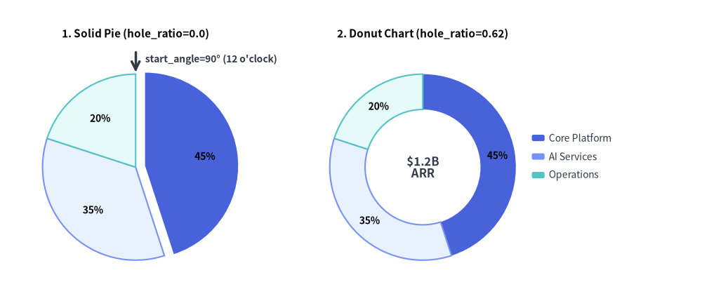
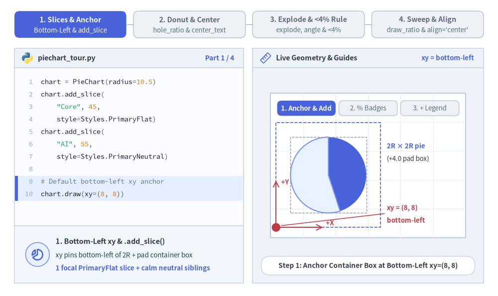
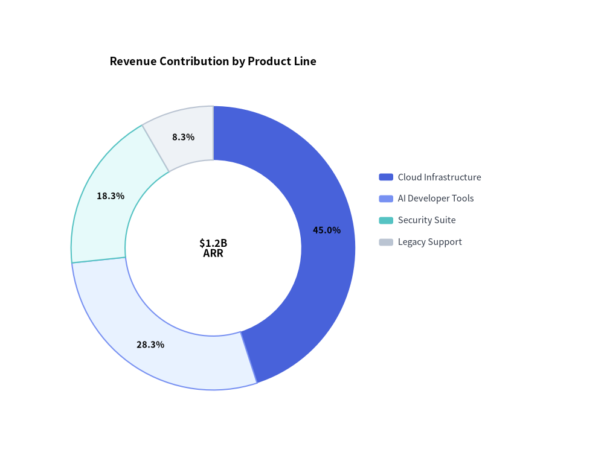
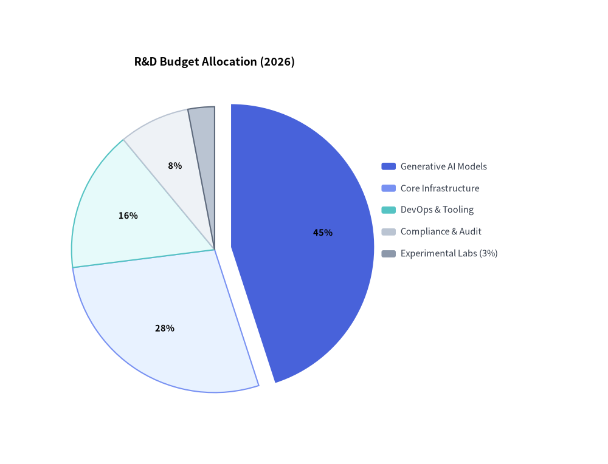

PieChart: Proportional Compositions & Donut Badges
PieChart (drawlib.charts.pie) visualizes proportional compositions where slices represent parts of a whole (100%). It supports classic solid pie charts, modern donut rings with center KPI badges, outward slice explosion, custom angular orientations, and decoupled legend rendering.

Source Code
from drawlib.canvas import save, setup
from drawlib.charts.pie import PieChart
from drawlib.lines import line
from drawlib.styles import Styles
from drawlib.text import text
setup(width=132, height=58)
# Left: Solid Pie Chart (hole_ratio=0.0) with Exploded Slice
solid_pie = PieChart(
radius=17.5,
hole_ratio=0.0,
start_angle=90.0,
title="1. Solid Pie (hole_ratio=0.0)",
title_style=Styles.BlackBold.patch(text_size=11.0),
value_text_style=Styles.BlackBold.patch(text_size=10.0),
value_format="{:.0f}%",
)
solid_pie.add_slice("Core Platform", 45.0, style=Styles.PrimaryFlat, explode=1.8)
solid_pie.add_slice("AI Services", 35.0, style=Styles.PrimaryNeutral)
solid_pie.add_slice("Operations", 20.0, style=Styles.SecondaryNeutral)
solid_pie.draw(xy=(4.0, 5.0))
# Callout for start_angle=90° (12 o'clock)
pie_w, pie_h = solid_pie.get_size()
pie_cx = 4.0 + pie_w / 2.0
pie_top_y = 5.0 + (pie_h - 6.0) / 2.0 + 17.5
line((pie_cx, pie_top_y + 4.2), (pie_cx, pie_top_y + 0.4), arrow_head="->", style=Styles.DarkBold)
text(
(pie_cx + 1.8, pie_top_y + 2.8),
"start_angle=90° (12 o'clock)",
style=Styles.DarkBold.patch(text_size=10.0, halign="left"),
)
# Right: Donut Chart (hole_ratio=0.62) with Center KPI
donut_pie = PieChart(
radius=17.5,
hole_ratio=0.62,
center_text="$1.2B\nARR",
center_text_style=Styles.DarkBold.patch(text_size=12.0),
title="2. Donut Chart (hole_ratio=0.62)",
title_style=Styles.BlackBold.patch(text_size=11.0),
value_text_style=Styles.BlackBold.patch(text_size=10.0),
value_format="{:.0f}%",
)
donut_pie.add_slice("Core Platform", 45.0, style=Styles.PrimaryFlat)
donut_pie.add_slice("AI Services", 35.0, style=Styles.PrimaryNeutral)
donut_pie.add_slice("Operations", 20.0, style=Styles.SecondaryNeutral)
donut_pie.draw(xy=(58.0, 5.0))
donut_pie.draw_legend(xy=(100.0, 32.0), text_style=Styles.Dark.patch(text_size=10.0))
save()
1. Core Concepts & Basic Usage
PieChart builds proportional sector compositions via .add_slice(...), anchoring by default at the Bottom-Left (x, y) corner of its container box (or directly on the pie center when align="center"). You can morph solid pies into hollow donut rings (hole_ratio, center_text), radially offset focal wedges (explode) while automatically suppressing cramped < 4% inline labels, and animate angular sweeps (draw_ratio) or slot-preserving visibility (show=False):

Source Code
from __future__ import annotations
import math
from drawlib.anim import Animation
from drawlib.canvas import save, setup
from drawlib.charts.pie import PieChart
from drawlib.icons import code as code_icons
from drawlib.icons import phosphor
from drawlib.lines import line, line_arc
from drawlib.shapes import circle, rectangle, wedge
from drawlib.smartarts import SourceCode, SourceCodeStyles
from drawlib.styles import Styles
from drawlib.text import text
W, H = 138.0, 82.0
setup(width=W, height=H)
anim = Animation(fps=10.0, loop=0)
CODE_TEXT_SIZE = 10.0
PT_TO_CANVAS = W / 720.0
FONT_CANVAS = CODE_TEXT_SIZE * PT_TO_CANVAS
LINE_H = FONT_CANVAS * 1.8
PAD_Y = FONT_CANVAS * 1.2
CODE_STYLES = SourceCodeStyles.get("default", font_lang="en", text_size=CODE_TEXT_SIZE).patch(
box_style=Styles.Neutral.patch(shape_fill_color=(0, 0, 0, 0), shape_line_width=0),
)
PANE_HEADER = Styles.Neutral.patch(
shape_fill_color=(238, 243, 250),
shape_line_color=(203, 213, 225),
shape_line_width=1.2,
shape_r=0.0,
)
EDITOR_BODY = Styles.Neutral.patch(
shape_fill_color=(250, 252, 255),
shape_line_color=(203, 213, 225),
shape_line_width=1.2,
shape_r=0.0,
)
TAKEAWAY_BODY = Styles.Neutral.patch(
shape_fill_color=(242, 246, 253),
shape_line_color=(203, 213, 225),
shape_line_width=1.2,
shape_r=0.0,
)
STUDIO_BODY = Styles.Neutral.patch(
shape_fill_color=(239, 243, 249),
shape_line_color=(203, 213, 225),
shape_line_width=1.2,
shape_r=0.0,
)
PART_ITEMS = [
("1. Slices & Anchor", "Bottom-Left & add_slice"),
("2. Donut & Center", "hole_ratio & center_text"),
("3. Explode & <4% Rule", "explode, angle & <4%"),
("4. Sweep & Align", "draw_ratio & align='center'"),
]
def draw_step_bar(active_part: int) -> None:
"""Draw top 4-part progress bar (active_part is 1..4)."""
pill_w = 31.0
pill_h = 7.4
gap = 2.0
start_x = 4.0 + pill_w / 2.0
cy = 75.2
for idx, (label, sublabel) in enumerate(PART_ITEMS, start=1):
cx = start_x + (idx - 1) * (pill_w + gap)
if idx > 1:
prev_cx = cx - (pill_w + gap)
line(
(prev_cx + pill_w / 2.0 + 0.2, cy),
(cx - pill_w / 2.0 - 0.2, cy),
style=Styles.PrimaryBold if idx <= active_part else Styles.MutedThin,
)
if idx == active_part:
st = Styles.PrimaryFlat.patch(shape_r=1.4)
tst = Styles.WhiteBold.patch(text_size=10.3)
sub_tst = Styles.White.patch(text_size=9.5)
elif idx < active_part:
st = Styles.PrimaryNeutral.patch(shape_r=1.4, shape_line_width=1.1)
tst = Styles.PrimaryBold.patch(text_size=10.3)
sub_tst = Styles.Primary.patch(text_size=9.5)
else:
st = Styles.Neutral.patch(shape_r=1.4, shape_line_width=1.1)
tst = Styles.MutedBold.patch(text_size=10.3)
sub_tst = Styles.Muted.patch(text_size=9.5)
rectangle((cx, cy), width=pill_w, height=pill_h, style=st)
text((cx, cy + 1.35), label, style=tst)
text((cx, cy - 1.55), sublabel, style=sub_tst)
def draw_left_pane(
active_part: int,
code_lines: list[str],
hl_range: tuple[int, int],
icon_fn: object,
summary_title: str,
summary_line1: str,
summary_line2: str,
) -> None:
"""Draw left Python code editor + bottom concept takeaway card."""
x0, w = 4.0, 63.5
cx = x0 + w / 2.0
top_y = 63.2
header_h = 5.4
editor_h = 43.8
takeaway_h = 15.8
rectangle((cx, top_y + header_h / 2.0), width=w, height=header_h, style=PANE_HEADER)
code_icons.python((x0 + 3.6, top_y + header_h / 2.0), width=3.4, style=Styles.Neutral)
text(
(x0 + 6.5, top_y + header_h / 2.0),
"piechart_tour.py",
style=Styles.DarkBold.patch(text_size=10.2, halign="left"),
)
text(
(x0 + w - 2.6, top_y + header_h / 2.0),
f"Part {active_part} / 4",
style=Styles.PrimaryBold.patch(text_size=9.8, halign="right"),
)
rectangle((cx, top_y - editor_h / 2.0), width=w, height=editor_h, style=EDITOR_BODY)
hl_start, hl_end = hl_range
hl_top = top_y - PAD_Y - hl_start * LINE_H
hl_bot = top_y - PAD_Y - (hl_end + 1) * LINE_H
hl_cy = (hl_top + hl_bot) / 2.0
hl_h = hl_top - hl_bot
rectangle(
(cx, hl_cy),
width=w - 0.6,
height=hl_h,
style=Styles.Neutral.patch(shape_fill_color=(229, 239, 255), shape_line_width=0),
)
rectangle(
(x0 + 0.55, hl_cy),
width=0.9,
height=hl_h,
style=Styles.PrimaryFlat.patch(shape_line_width=0),
)
SourceCode.draw(
xy=(x0, top_y),
width=w,
code="\n".join(code_lines),
styles=CODE_STYLES,
code_lang="python",
show_linenum=True,
align="top_left",
)
take_cy = 3.6 + takeaway_h / 2.0
rectangle((cx, take_cy), width=w, height=takeaway_h, style=TAKEAWAY_BODY)
circle(
(x0 + 6.4, take_cy),
radius=3.3,
style=Styles.PrimaryNeutral.patch(shape_line_width=1.2),
)
icon_fn((x0 + 6.4, take_cy), width=3.8, style=Styles.PrimaryBold) # type: ignore[operator]
text(
(x0 + 11.4, take_cy + 3.6),
summary_title,
style=Styles.DarkBold.patch(text_size=10.4, halign="left"),
)
text(
(x0 + 11.4, take_cy - 0.2),
summary_line1,
style=Styles.Dark.patch(text_size=9.7, halign="left"),
)
text(
(x0 + 11.4, take_cy - 3.8),
summary_line2,
style=Styles.PrimaryBold.patch(text_size=9.6, halign="left"),
)
def draw_geometry_studio(param_badge: str, footer_caption: str) -> tuple[float, float]:
"""Draw right geometry lab shell, inner coordinate sheet with subtle grid, and footer."""
x0, w = 70.0, 64.0
cx = x0 + w / 2.0
top_y = 63.2
header_h = 5.4
body_h = 59.6
rectangle((cx, top_y + header_h / 2.0), width=w, height=header_h, style=PANE_HEADER)
phosphor.ruler((x0 + 3.6, top_y + header_h / 2.0), width=3.4, style=Styles.Primary)
text(
(x0 + 6.5, top_y + header_h / 2.0),
"Live Geometry & Guides",
style=Styles.DarkBold.patch(text_size=10.2, halign="left"),
)
text(
(x0 + w - 2.6, top_y + header_h / 2.0),
param_badge,
style=Styles.PrimaryBold.patch(text_size=9.6, halign="right"),
)
rectangle((cx, 3.6 + body_h / 2.0), width=w, height=body_h, style=STUDIO_BODY)
sheet_cx, sheet_cy = cx, 36.2
sheet_w, sheet_h = 54.0, 40.0
sx0, sy0 = sheet_cx - sheet_w / 2.0, sheet_cy - sheet_h / 2.0
rectangle(
(sheet_cx, sheet_cy),
width=sheet_w,
height=sheet_h,
style=Styles.Neutral.patch(
shape_fill_color=(255, 255, 255),
shape_line_color=(180, 194, 214),
shape_line_width=1.2,
),
)
g_st = Styles.MutedThin.patch(line_color=(232, 238, 246), line_width=0.8)
for gx in range(1, 6):
vx = sx0 + gx * (sheet_w / 6.0)
line((vx, sy0), (vx, sy0 + sheet_h), style=g_st)
for gy in range(1, 5):
vy = sy0 + gy * (sheet_h / 5.0)
line((sx0, vy), (sx0 + sheet_w, vy), style=g_st)
rectangle(
(cx, 8.4),
width=59.2,
height=5.2,
style=Styles.Neutral.patch(
shape_fill_color=(255, 255, 255),
shape_line_color=(203, 213, 225),
shape_line_width=1.1,
shape_r=2.4,
),
text=footer_caption,
text_style=Styles.DarkBold.patch(text_size=9.8),
)
return sheet_cx, sheet_cy
def draw_sub_pills(scx: float, labels: list[str], active_idx: int) -> None:
"""Draw 3-step tracker pills near the top of the studio sheet."""
pw, ph, pgap = 16.2, 4.2, 0.9
p_start = scx - (3 * pw + 2 * pgap) / 2.0 + pw / 2.0
for idx, lbl in enumerate(labels):
px = p_start + idx * (pw + pgap)
if idx == active_idx:
pst = Styles.PrimaryFlat.patch(shape_r=1.2)
ptst = Styles.WhiteBold.patch(text_size=9.5)
elif idx < active_idx:
pst = Styles.PrimaryNeutral.patch(shape_r=1.2, shape_line_width=1.0)
ptst = Styles.PrimaryBold.patch(text_size=9.5)
else:
pst = Styles.Neutral.patch(shape_r=1.2, shape_line_width=1.0)
ptst = Styles.Muted.patch(text_size=9.5)
rectangle((px, 52.0), width=pw, height=ph, style=pst, text=lbl, text_style=ptst)
VAL_STYLE = Styles.BlackBold.patch(text_size=9.8)
LEG_STYLE = Styles.Dark.patch(text_size=9.6)
PX0, PY0, R_PIE = 76.5, 19.0, 10.5
LEG_XY = (107.2, 43.2)
# =========================================================================
# Part 1: Slices & Anchor — Bottom-Left xy, .add_slice(), % Badges & Legend
# =========================================================================
PART1_STATES = [
(
"anchor_2slices",
3.3,
[
"chart = PieChart(radius=10.5)",
"chart.add_slice(",
' "Core", 45,',
" style=Styles.PrimaryFlat)",
"chart.add_slice(",
' "AI", 55,',
" style=Styles.PrimaryNeutral)",
"",
"# Default bottom-left xy anchor",
"chart.draw(xy=(8, 8))",
],
(8, 9),
"xy = bottom-left",
"Step 1: Anchor Container Box at Bottom-Left xy=(8, 8)",
"1. Bottom-Left xy & .add_slice()",
"xy pins bottom-left of 2R + pad container box",
"1 focal PrimaryFlat slice + calm neutral siblings",
),
(
"badges_3slices",
3.3,
[
"chart = PieChart(",
" radius=10.5,",
" value_text_style=VAL_STYLE,",
' value_format="{:.0f}%",',
")",
'chart.add_slice("Core", 45,',
" style=Styles.PrimaryFlat)",
'chart.add_slice("AI", 30,',
" style=Styles.PrimaryNeutral)",
'chart.add_slice("Ops", 25,',
" style=Styles.Neutral)",
],
(2, 3),
"value_text_style",
'Step 2: Render Inline % Badges via value_format="{:.0f}%"',
"2. Proportional Slices & % Badges",
"Values auto-normalize to 100% across all slices",
"value_text_style enables inline wedge % badges",
),
(
"with_legend",
3.4,
[
"chart = PieChart(",
" radius=10.5,",
" value_text_style=VAL_STYLE,",
' value_format="{:.0f}%")',
'chart.add_slice("Core", 45, ...)',
'chart.add_slice("AI", 30, ...)',
'chart.add_slice("Ops", 25, ...)',
"chart.draw(xy=(8, 8))",
"chart.draw_legend(",
" xy=(39, 32),",
" text_style=Styles.Dark)",
],
(8, 10),
"draw_legend()",
"Step 3: Pair PieChart with Decoupled chart.draw_legend()",
"3. Decoupled Legend Placement",
"draw_legend(xy=...) places color swatches anywhere",
"55% neutral baseline keeps focal Core slice crisp",
),
]
for p1_idx, (p1_mode, dur, code_1, hl_rng, badge_txt, foot_txt, s_t, s_1, s_2) in enumerate(PART1_STATES):
with anim.frame(duration=dur):
draw_step_bar(1)
draw_left_pane(1, code_1, hl_rng, phosphor.chart_pie_slice, s_t, s_1, s_2)
scx, scy = draw_geometry_studio(badge_txt, foot_txt)
draw_sub_pills(scx, ["1. Anchor & Add", "2. % Badges", "3. + Legend"], p1_idx)
chart = PieChart(
radius=R_PIE,
value_text_style=None if p1_mode == "anchor_2slices" else VAL_STYLE,
value_format="{:.0f}%",
)
if p1_mode == "anchor_2slices":
chart.add_slice("Core", 45.0, style=Styles.PrimaryFlat)
chart.add_slice("AI", 55.0, style=Styles.PrimaryNeutral)
else:
chart.add_slice("Core", 45.0, style=Styles.PrimaryFlat)
chart.add_slice("AI", 30.0, style=Styles.PrimaryNeutral)
chart.add_slice("Ops", 25.0, style=Styles.Neutral)
cw, ch = chart.get_size()
pcx, pcy = PX0 + cw / 2.0, PY0 + ch / 2.0
chart.draw(xy=(PX0, PY0))
if p1_mode == "anchor_2slices":
# Outer container box + inner 2R x 2R guide
rectangle(
(pcx, pcy),
width=cw,
height=ch,
style=Styles.PrimaryDashed.patch(shape_fill_color=(0, 0, 0, 0), shape_line_width=1.2),
)
rectangle(
(pcx, pcy),
width=2.0 * R_PIE,
height=2.0 * R_PIE,
style=Styles.MutedDashed.patch(shape_fill_color=(0, 0, 0, 0), shape_line_width=1.0),
)
line(
(PX0, PY0),
(PX0, PY0 + 13.0),
arrow_head="->",
style=Styles.DangerBold.patch(line_width=1.4),
)
text((PX0 + 1.4, PY0 + 12.6), "+Y", style=Styles.DangerBold.patch(text_size=9.5, halign="left"))
line(
(PX0, PY0),
(PX0 + 13.0, PY0),
arrow_head="->",
style=Styles.DangerBold.patch(line_width=1.4),
)
text((PX0 + 13.8, PY0 + 1.3), "+X", style=Styles.DangerBold.patch(text_size=9.5, halign="left"))
circle((PX0, PY0), radius=1.2, style=Styles.DangerFlat)
text(
(107.2, 41.5),
"2R × 2R pie",
style=Styles.PrimaryBold.patch(text_size=9.6, halign="left"),
)
text(
(107.2, 38.0),
"(+4.0 pad box)",
style=Styles.Dark.patch(text_size=9.5, halign="left"),
)
line(
(106.5, 22.8),
(PX0 + 1.5, PY0 + 0.5),
style=Styles.DangerBold.patch(line_width=1.1),
)
text(
(107.2, 24.4),
"xy = (8, 8)",
style=Styles.DangerBold.patch(text_size=9.6, halign="left"),
)
text(
(107.2, 21.0),
"bottom-left",
style=Styles.DangerBold.patch(text_size=9.5, halign="left"),
)
elif p1_mode == "badges_3slices":
circle((PX0, PY0), radius=1.0, style=Styles.DangerFlat)
mid_rad = math.radians(9.0)
bx = pcx + (R_PIE * 0.65) * math.cos(mid_rad)
by = pcy + (R_PIE * 0.65) * math.sin(mid_rad)
line(
(107.0, 35.5),
(bx + 3.2, by + 0.3),
arrow_head="->",
style=Styles.PrimaryBold.patch(line_width=1.3),
)
text(
(107.6, 37.2),
"inline % badge",
style=Styles.PrimaryBold.patch(text_size=9.6, halign="left"),
)
text(
(107.6, 33.6),
'"{:.0f}%" format',
style=Styles.Dark.patch(text_size=9.5, halign="left"),
)
else:
chart.draw_legend(xy=LEG_XY, text_style=LEG_STYLE)
rectangle(
(112.2, 39.7),
width=12.4,
height=10.6,
style=Styles.PrimaryDashed.patch(shape_fill_color=(0, 0, 0, 0), shape_line_width=1.1, shape_r=1.0),
)
text(
(107.2, 25.5),
"draw_legend(xy)",
style=Styles.PrimaryBold.patch(text_size=9.6, halign="left"),
)
text(
(107.2, 22.0),
"decoupled top-left",
style=Styles.Dark.patch(text_size=9.5, halign="left"),
)
# =========================================================================
# Part 2: Donut & Center — hole_ratio (0.0 -> 0.58) & center_text KPI
# =========================================================================
PART2_STATES = [
(
0.0,
"",
3.3,
[
"chart = PieChart(",
" radius=11.0,",
" hole_ratio=0.0,",
" value_text_style=VAL_STYLE,",
' value_format="{:.0f}%")',
'chart.add_slice("Core", 45, ...)',
'chart.add_slice("AI", 30, ...)',
'chart.add_slice("Ops", 25, ...)',
"chart.draw(xy=(8, 8))",
"chart.draw_legend(",
" (39, 32), Styles.Dark)",
],
(2, 2),
"hole_ratio = 0.0",
"Solid Pie (hole_ratio=0.0): Wedges Meet at Center Origin",
"Solid Pie Baseline (hole_ratio=0.0)",
"Default 0.0 renders full circular sectors to center",
"Percentage badges sit at 0.65 * radius",
),
(
0.58,
"",
3.3,
[
"chart = PieChart(",
" radius=11.0,",
" hole_ratio=0.58,",
" value_text_style=VAL_STYLE,",
' value_format="{:.0f}%")',
'chart.add_slice("Core", 45, ...)',
'chart.add_slice("AI", 30, ...)',
'chart.add_slice("Ops", 25, ...)',
"chart.draw(xy=(8, 8))",
"chart.draw_legend(",
" (39, 32), Styles.Dark)",
],
(2, 2),
"hole_ratio = 0.58",
"Donut Ring (hole_ratio=0.58): Opens Hollow Inner Circle",
"Donut Ring Topology (hole_ratio=0.58)",
"Inner hole radius = hole_ratio * radius (0.0..0.9)",
"% badges center cleanly inside the ring band",
),
(
0.58,
"99.9%\nSLO",
3.5,
[
"chart = PieChart(",
" radius=11.0,",
" hole_ratio=0.58,",
' center_text="99.9%\\nSLO",',
" center_text_style=(",
" Styles.DarkBold),",
" value_text_style=VAL_STYLE)",
'chart.add_slice("Core", 45, ...)',
'chart.add_slice("AI", 30, ...)',
'chart.add_slice("Ops", 25, ...)',
"chart.draw(xy=(8, 8))",
],
(3, 5),
"center_text KPI",
'center_text="99.9%\\nSLO": Multiline Executive KPI Badge',
"Donut Center KPI (center_text)",
"Renders multiline \\n headline metrics inside hole",
"Requires hole_ratio > 0 and center_text_style",
),
]
for p2_idx, (h_ratio, c_txt, dur, code_2, hl_rng, badge_txt, foot_txt, s_t, s_1, s_2) in enumerate(PART2_STATES):
with anim.frame(duration=dur):
draw_step_bar(2)
draw_left_pane(2, code_2, hl_rng, phosphor.chart_donut, s_t, s_1, s_2)
scx, scy = draw_geometry_studio(badge_txt, foot_txt)
draw_sub_pills(scx, ["hole_ratio=0.0", "hole_ratio=0.58", "center_text KPI"], p2_idx)
r2 = 11.0
px2, py2 = 76.2, 18.5
chart = PieChart(
radius=r2,
hole_ratio=h_ratio,
center_text=c_txt,
center_text_style=Styles.DarkBold.patch(text_size=10.6) if c_txt else None,
value_text_style=Styles.BlackBold.patch(text_size=9.5),
value_format="{:.0f}%",
)
chart.add_slice("Core", 45.0, style=Styles.PrimaryFlat)
chart.add_slice("AI", 30.0, style=Styles.PrimaryNeutral)
chart.add_slice("Ops", 25.0, style=Styles.Neutral)
cw2, ch2 = chart.get_size()
pcx2, pcy2 = px2 + cw2 / 2.0, py2 + ch2 / 2.0
chart.draw(xy=(px2, py2))
chart.draw_legend(xy=(107.6, 43.2), text_style=LEG_STYLE)
if p2_idx == 0:
circle((pcx2, pcy2), radius=1.05, style=Styles.DangerFlat)
text(
(107.6, 25.4),
"hole_ratio = 0.0",
style=Styles.PrimaryBold.patch(text_size=9.6, halign="left"),
)
text(
(107.6, 21.8),
"solid center hub",
style=Styles.Dark.patch(text_size=9.5, halign="left"),
)
elif p2_idx == 1:
in_r = r2 * h_ratio
line(
(pcx2 - in_r + 0.4, pcy2),
(pcx2 + in_r - 0.4, pcy2),
arrow_head="<->",
style=Styles.PrimaryBold.patch(line_width=1.3),
)
text(
(pcx2, pcy2 + 2.1),
"0.58 R",
style=Styles.PrimaryBold.patch(text_size=9.5),
)
text(
(107.6, 25.4),
"hole_ratio = 0.58",
style=Styles.PrimaryBold.patch(text_size=9.6, halign="left"),
)
text(
(107.6, 21.8),
"clamped [0.0, 0.9]",
style=Styles.Dark.patch(text_size=9.5, halign="left"),
)
else:
text(
(107.6, 25.4),
"center_text KPI",
style=Styles.PrimaryBold.patch(text_size=9.6, halign="left"),
)
text(
(107.6, 21.8),
"supports \\n lines",
style=Styles.Dark.patch(text_size=9.5, halign="left"),
)
# =========================================================================
# Part 3: Explode & <4% Rule — explode, start_angle/clockwise & <4% Rule
# =========================================================================
PART3_STATES = [
(
"explode_18",
3.3,
[
"chart = PieChart(",
" radius=10.5,",
" value_text_style=VAL_STYLE,",
' value_format="{:.0f}%")',
"chart.add_slice(",
' "Core", 45,',
" style=Styles.PrimaryFlat,",
" explode=1.8)",
'chart.add_slice("AI", 30, ...)',
'chart.add_slice("Ops", 25, ...)',
"chart.draw(xy=(8, 8))",
],
(4, 7),
"explode = 1.8",
"explode=1.8: Offsets Focal Wedge Outward Along Bisector",
"Radial Wedge Offset (explode=1.8)",
"Displaces slice outward along its mid-angle ray",
"Spotlights hero share without distorting angles",
),
(
"angle_ccw",
3.3,
[
"chart = PieChart(",
" radius=10.5,",
" start_angle=180.0,",
" clockwise=False,",
" value_text_style=VAL_STYLE,",
' value_format="{:.0f}%")',
"chart.add_slice(",
' "Core", 45, ..., explode=1.8)',
'chart.add_slice("AI", 30, ...)',
'chart.add_slice("Ops", 25, ...)',
"chart.draw(xy=(8, 8))",
],
(2, 3),
"180° & CCW",
"start_angle=180, clockwise=False: 9 o'Clock CCW Sweep",
"Custom Orientation (start_angle, clockwise)",
"start_angle=180° starts at 9 o'clock (90° = top)",
"clockwise=False sweeps wedges counter-clockwise",
),
(
"under_4pct",
3.5,
[
"chart = PieChart(",
" radius=10.5,",
" value_text_style=VAL_STYLE,",
' value_format="{:.0f}%")',
'chart.add_slice("Core", 44, ...)',
'chart.add_slice("AI", 30, ...)',
'chart.add_slice("Ops", 23, ...)',
"# < 4% hides inline % label!",
'chart.add_slice("Labs (3%)", 3,',
" style=Styles.SecondaryNeutral)",
"chart.draw_legend((39, 33), ...)",
],
(7, 9),
"< 4% auto-hide",
"3% Minor Slice: Inline % Auto-Suppressed (< 4%), Legend Kept!",
"Automatic < 4% Inline Suppression",
"Hides inline % on narrow < 4% wedges to stop overlap",
"Minor slices stay clearly listed in draw_legend()",
),
]
for p3_idx, (p3_mode, dur, code_3, hl_rng, badge_txt, foot_txt, s_t, s_1, s_2) in enumerate(PART3_STATES):
with anim.frame(duration=dur):
draw_step_bar(3)
draw_left_pane(3, code_3, hl_rng, phosphor.arrows_out, s_t, s_1, s_2)
scx, scy = draw_geometry_studio(badge_txt, foot_txt)
draw_sub_pills(scx, ["explode = 1.8", "180° & CCW", "< 4% Rule (3%)"], p3_idx)
st_ang = 180.0 if p3_mode == "angle_ccw" else 90.0
cw_dir = False if p3_mode == "angle_ccw" else True
chart = PieChart(
radius=R_PIE,
start_angle=st_ang,
clockwise=cw_dir,
value_text_style=VAL_STYLE,
value_format="{:.0f}%",
)
if p3_mode == "under_4pct":
chart.add_slice("Core", 44.0, style=Styles.PrimaryFlat)
chart.add_slice("AI", 30.0, style=Styles.PrimaryNeutral)
chart.add_slice("Ops", 23.0, style=Styles.Neutral)
chart.add_slice("Labs (3%)", 3.0, style=Styles.SecondaryNeutral)
else:
chart.add_slice("Core", 45.0, style=Styles.PrimaryFlat, explode=1.8)
chart.add_slice("AI", 30.0, style=Styles.PrimaryNeutral)
chart.add_slice("Ops", 25.0, style=Styles.Neutral)
cw3, ch3 = chart.get_size()
pcx3, pcy3 = PX0 + cw3 / 2.0, PY0 + ch3 / 2.0
chart.draw(xy=(PX0, PY0))
chart.draw_legend(xy=(107.2, 43.8 if p3_mode == "under_4pct" else 43.2), text_style=LEG_STYLE)
if p3_mode == "explode_18":
text(
(107.2, 25.8),
"explode = 1.8",
style=Styles.DangerBold.patch(text_size=9.6, halign="left"),
)
text(
(107.2, 22.2),
"radial bisector shift",
style=Styles.Dark.patch(text_size=9.5, halign="left"),
)
mid_r = math.radians(9.0)
tip_x = pcx3 + (R_PIE + 1.8) * math.cos(mid_r)
tip_y = pcy3 + (R_PIE + 1.8) * math.sin(mid_r)
line(
(106.6, 25.8),
(tip_x + 0.5, tip_y - 1.2),
arrow_head="->",
style=Styles.DangerBold.patch(line_width=1.2),
)
elif p3_mode == "angle_ccw":
line(
(pcx3 - R_PIE - 3.2, pcy3),
(pcx3 - R_PIE - 0.3, pcy3),
arrow_head="->",
style=Styles.DangerBold.patch(line_width=1.5),
)
text(
(pcx3 - R_PIE + 1.0, pcy3 + 12.2),
"180° start (CCW)",
style=Styles.DangerBold.patch(text_size=9.5, halign="left"),
)
line_arc(
xy=(pcx3, pcy3),
width=2.0 * (R_PIE + 2.2),
height=2.0 * (R_PIE + 2.2),
angle_start=192.0,
angle_end=248.0,
arrow_head="->",
style=Styles.PrimaryBold.patch(line_width=1.3),
)
text(
(107.2, 25.4),
"start_angle=180°",
style=Styles.PrimaryBold.patch(text_size=9.6, halign="left"),
)
text(
(107.2, 21.8),
"clockwise=False",
style=Styles.Dark.patch(text_size=9.5, halign="left"),
)
else:
# 3% slice sits right beside 12 o'clock (90°..100.8°)
w_rad = math.radians(95.4)
wx = pcx3 + R_PIE * math.cos(w_rad)
wy = pcy3 + R_PIE * math.sin(w_rad)
text(
(75.8, 47.4),
"3% (<4%: no inline %)",
style=Styles.DangerBold.patch(text_size=9.5, halign="left"),
)
line(
(88.5, 45.7),
(wx, wy + 0.3),
arrow_head="->",
style=Styles.DangerBold.patch(line_width=1.4),
)
rectangle(
(115.6, 33.3),
width=18.2,
height=3.4,
style=Styles.PrimaryDashed.patch(shape_fill_color=(0, 0, 0, 0), shape_line_width=1.2),
)
text(
(107.2, 25.0),
"< 4% inline hidden",
style=Styles.DangerBold.patch(text_size=9.6, halign="left"),
)
text(
(107.2, 21.4),
"kept in legend!",
style=Styles.PrimaryBold.patch(text_size=9.5, halign="left"),
)
# =========================================================================
# Part 4: Sweep & Align — draw_ratio=0.65, s2.show=False & align="center"
# =========================================================================
PART4_STATES = [
(
"sweep_65",
3.3,
[
"chart = PieChart(",
" radius=10.5,",
" value_text_style=VAL_STYLE,",
' value_format="{:.0f}%")',
"chart.add_slice(",
' "Core", 45,',
" style=Styles.PrimaryFlat,",
" draw_ratio=0.65)",
"s2 = chart.add_slice(",
' "AI", 30, style=AI_STYLE)',
'chart.add_slice("Ops", 25, ...)',
],
(4, 7),
"draw_ratio = 0.65",
"draw_ratio=0.65: Partial Angular Sweep Within Fixed Sector",
"Partial Angular Sweep (draw_ratio)",
"Sweeps span * draw_ratio (0.0..1.0) per slice",
"Sibling wedges stay anchored at final angles",
),
(
"hide_s2",
3.3,
[
"chart = PieChart(",
" radius=10.5,",
" value_text_style=VAL_STYLE,",
' value_format="{:.0f}%")',
'chart.add_slice("Core", 45, ...)',
"s2 = chart.add_slice(",
' "AI", 30, style=AI_STYLE)',
'chart.add_slice("Ops", 25, ...)',
"# Preserves 100% pie angles!",
"s2.show = False",
"chart.draw(xy=(8, 8))",
],
(8, 9),
"s2.show = False",
"s2.show = False: Hides Slice Without Rescaling Sibling Angles",
"Slot-Preserving Visibility (.show = False)",
"Skips wedge & legend item while keeping total sum",
"Core (45%) & Ops (25%) keep exact sector spans",
),
(
"align_center",
3.5,
[
"chart = PieChart(",
" radius=10.5,",
" hole_ratio=0.52,",
" value_text_style=VAL_STYLE,",
' value_format="{:.0f}%")',
'chart.add_slice("Core", 45, ...)',
'chart.add_slice("AI", 30, ...)',
'chart.add_slice("Ops", 25, ...)',
"# Pin (cx, cy) at pie center!",
"chart.draw(",
' xy=(34, 27), align="center")',
],
(8, 10),
'align = "center"',
'align="center": Pins xy=(cx, cy) Directly at Pie Center!',
'Centered Hub Anchor (align="center")',
"Places pie center directly on xy=(cx, cy)",
"Ideal for centering radial charts on grid midlines",
),
]
for p4_idx, (p4_mode, dur, code_4, hl_rng, badge_txt, foot_txt, s_t, s_1, s_2) in enumerate(PART4_STATES):
with anim.frame(duration=dur):
draw_step_bar(4)
draw_left_pane(4, code_4, hl_rng, phosphor.crosshair, s_t, s_1, s_2)
scx, scy = draw_geometry_studio(badge_txt, foot_txt)
draw_sub_pills(scx, ["draw_ratio=0.65", "s2.show = False", 'align="center"'], p4_idx)
if p4_mode == "sweep_65":
chart = PieChart(radius=R_PIE, value_text_style=VAL_STYLE, value_format="{:.0f}%")
chart.add_slice("Core", 45.0, style=Styles.PrimaryFlat, draw_ratio=0.65)
chart.add_slice("AI", 30.0, style=Styles.PrimaryNeutral)
chart.add_slice("Ops", 25.0, style=Styles.Neutral)
cw4, ch4 = chart.get_size()
pcx4, pcy4 = PX0 + cw4 / 2.0, PY0 + ch4 / 2.0
chart.draw(xy=(PX0, PY0))
chart.draw_legend(xy=LEG_XY, text_style=LEG_STYLE)
# Ghost wedge for remaining 35% of Core slice (-72° to -15.3°)
wedge(
xy=(pcx4, pcy4),
radius=R_PIE,
angle_start=288.0,
angle_end=344.7,
style=Styles.PrimaryDashed.patch(shape_fill_color=(0, 0, 0, 0), shape_line_width=1.3),
)
text(
(107.2, 25.4),
"draw_ratio = 0.65",
style=Styles.PrimaryBold.patch(text_size=9.6, halign="left"),
)
text(
(107.2, 21.8),
"65% angular sweep",
style=Styles.Dark.patch(text_size=9.5, halign="left"),
)
elif p4_mode == "hide_s2":
chart = PieChart(radius=R_PIE, value_text_style=VAL_STYLE, value_format="{:.0f}%")
chart.add_slice("Core", 45.0, style=Styles.PrimaryFlat)
s2 = chart.add_slice("AI", 30.0, style=Styles.PrimaryNeutral)
chart.add_slice("Ops", 25.0, style=Styles.Neutral)
s2.show = False
cw4, ch4 = chart.get_size()
pcx4, pcy4 = PX0 + cw4 / 2.0, PY0 + ch4 / 2.0
chart.draw(xy=(PX0, PY0))
chart.draw_legend(xy=LEG_XY, text_style=LEG_STYLE)
# Ghost wedge in preserved AI 30% sector (180°..288°)
wedge(
xy=(pcx4, pcy4),
radius=R_PIE,
angle_start=180.0,
angle_end=288.0,
style=Styles.MutedDashed.patch(shape_fill_color=(0, 0, 0, 0), shape_line_width=1.3),
)
text(
(pcx4 - 3.8, pcy4 - 5.2),
"slot\nkept",
style=Styles.MutedBold.patch(text_size=9.5),
)
text(
(107.2, 25.4),
"s2.show = False",
style=Styles.PrimaryBold.patch(text_size=9.6, halign="left"),
)
text(
(107.2, 21.8),
"100% sum preserved",
style=Styles.Dark.patch(text_size=9.5, halign="left"),
)
else:
cx_a, cy_a = scx, 34.8
chart = PieChart(
radius=10.5,
hole_ratio=0.52,
value_text_style=Styles.BlackBold.patch(text_size=9.5),
value_format="{:.0f}%",
)
chart.add_slice("Core", 45.0, style=Styles.PrimaryFlat)
chart.add_slice("AI", 30.0, style=Styles.PrimaryNeutral)
chart.add_slice("Ops", 25.0, style=Styles.Neutral)
cw4, ch4 = chart.get_size()
chart.draw(xy=(cx_a, cy_a), align="center")
rectangle(
(cx_a, cy_a),
width=cw4,
height=ch4,
style=Styles.PrimaryDashed.patch(shape_fill_color=(0, 0, 0, 0), shape_line_width=1.2),
)
line((cx_a - 17.0, cy_a), (cx_a - 14.5, cy_a), style=Styles.DangerBold.patch(line_width=1.5))
line((cx_a + 14.5, cy_a), (cx_a + 17.0, cy_a), style=Styles.DangerBold.patch(line_width=1.5))
line((cx_a, cy_a - 3.6), (cx_a, cy_a + 3.6), style=Styles.DangerBold.patch(line_width=1.3))
line((cx_a - 3.6, cy_a), (cx_a + 3.6, cy_a), style=Styles.DangerBold.patch(line_width=1.3))
circle(
(cx_a, cy_a),
radius=1.6,
style=Styles.Neutral.patch(shape_fill_color=(255, 255, 255), shape_line_width=0),
)
circle((cx_a, cy_a), radius=1.15, style=Styles.DangerFlat)
text(
(cx_a, 18.0),
'xy = (34, 27) • align="center"',
style=Styles.DangerBold.patch(text_size=9.6),
)
save()
- Slices, Anchor & Legend (
xy,add_slice,draw_legend): Register proportional wedges via.add_slice(name, value, style=...), render inline percentage badges (value_text_style,value_format), and pairchart.draw(xy=...)(defaultalign="bottom_left") withchart.draw_legend(...). - Solid Pie vs. Donut Center KPI (
hole_ratio,center_text): Keephole_ratio=0.0for full sectors or sethole_ratioin(0.0, 0.9](typically0.5–0.7) to open a donut ring for multilinecenter_text+center_text_styleKPI badges. - Radial Explode, Orientation &
< 4%Rule (explode,start_angle,clockwise): Offset focal wedges radially viaexplode > 0.0, customize radial orientation (start_angle,clockwise), and rely on automatic < 4% inline label suppression (while keeping minor slices visible indraw_legend()). - Partial Sweep, Visibility & Center Pinning (
draw_ratio,show,align="center"): Animate angular or radial progress viadraw_ratio(draw_direction), toggleslice.show = Falsewithout rescaling sibling angles, or passalign="center"to pinxy=(cx, cy)directly at the pie center.
2. Donut Chart with Center KPI Badge
Donut charts are ideal for executive dashboards. Ground supporting slices in calm neutral tokens (Styles.PrimaryNeutral, Styles.SecondaryNeutral, Styles.Neutral) while reserving Styles.PrimaryFlat for the primary focal slice:
from drawlib.canvas import save, setup
from drawlib.charts.pie import PieChart
from drawlib.styles import Styles
setup(width=102, height=78)
chart = PieChart(
radius=24.0,
hole_ratio=0.62,
center_text="$1.2B\nARR",
center_text_style=Styles.BlackBold.patch(text_size=12.0),
title="Revenue Contribution by Product Line",
title_style=Styles.BlackBold.patch(text_size=13.0),
value_text_style=Styles.BlackBold.patch(text_size=10.5),
)
chart.add_slice("Cloud Infrastructure", 540.0, style=Styles.PrimaryFlat)
chart.add_slice("AI Developer Tools", 340.0, style=Styles.PrimaryNeutral)
chart.add_slice("Security Suite", 220.0, style=Styles.SecondaryNeutral)
chart.add_slice("Legacy Support", 100.0, style=Styles.Neutral)
chart.draw(xy=(8.0, 8.0))
chart.draw_legend(xy=(64.0, 48.0), text_style=Styles.Dark.patch(text_size=10.5))
save()

3. Exploded Slice Allocation & Callable Formatter
Setting explode > 0.0 radially displaces a slice away from the center origin. Here we also pass a callable value_format and include a minor 3% slice whose inline label is automatically suppressed by the < 4% threshold rule while remaining visible in the legend:
from drawlib.canvas import save, setup
from drawlib.charts.pie import PieChart
from drawlib.styles import Styles
setup(width=102, height=78)
chart = PieChart(
radius=24.0,
title="R&D Budget Allocation (2026)",
title_style=Styles.BlackBold.patch(text_size=13.0),
value_text_style=Styles.BlackBold.patch(text_size=10.5),
value_format=lambda pct: f"{pct:.0f}%",
)
chart.add_slice("Generative AI Models", 45.0, style=Styles.PrimaryFlat, explode=2.8)
chart.add_slice("Core Infrastructure", 28.0, style=Styles.PrimaryNeutral)
chart.add_slice("DevOps & Tooling", 16.0, style=Styles.SecondaryNeutral)
chart.add_slice("Compliance & Audit", 8.0, style=Styles.Neutral)
chart.add_slice("Experimental Labs (3%)", 3.0, style=Styles.Muted)
chart.draw(xy=(8.0, 8.0))
chart.draw_legend(xy=(64.0, 50.0), text_style=Styles.Dark.patch(text_size=10.5))
save()

4. API Reference
Constructor (PieChart)
All constructor arguments are keyword-only (*):
from drawlib.charts.pie import DrawDirection, FormatterType, PieChart, Slice
chart = PieChart(
*,
radius: float = 20.0,
hole_ratio: float = 0.0,
start_angle: float = 90.0,
clockwise: bool = True,
value_text_style: Style | None = None,
value_format: FormatterType = "{:.1f}%",
center_text: str = "",
center_text_style: Style | None = None,
background_style: Style | None = None,
title: str = "",
title_style: Style | None = None,
width: float | None = None,
height: float | None = None,
)
| Parameter | Type | Default | Description |
|---|---|---|---|
radius |
float |
20.0 |
Outer radius of the pie circle in canvas units. |
hole_ratio |
float |
0.0 |
Inner hole radius ratio (0.0 for solid pie; clamped to [0.0, 0.9] for donut rings). |
start_angle |
float |
90.0 |
Starting radial angle in degrees (90.0 is 12 o'clock, 0.0 is 3 o'clock). |
clockwise |
bool |
True |
When True, slices progress clockwise from start_angle; when False, counter-clockwise. |
value_text_style |
Style | None |
None |
Style for percentage badges drawn inside wedges (>= 4% share). If None, badges are omitted. |
value_format |
FormatterType |
"{:.1f}%" |
Format string or Callable[[float], str] receiving the slice's percentage (0.0–100.0). |
center_text |
str |
"" |
Text rendered inside the donut hole (supports \n multiline strings; requires hole_ratio > 0). |
center_text_style |
Style | None |
None |
Typography style for center_text. Required for center badge text to render. |
background_style |
Style | None |
None |
Style for the outer chart background card. If None, card is omitted. |
title |
str |
"" |
Chart title text rendered at the top of the container. |
title_style |
Style | None |
None |
Typography style for title. Required for the title to render. |
width / height |
float | None |
None |
Explicit container dimensions. If None, computed automatically from radius and title. |
Methods & Properties
add_slice(name: str, value: float, style: Style, explode: float = 0.0, legend_text_style: Style | None = None, *, show: bool = True, draw_ratio: float = 1.0, draw_direction: DrawDirection = "left_to_right") -> Slice: Registers a proportional wedge and returns the mutableSliceinstance.explode: Outward radial offset distance along the slice's mid-angle (0.0= flush with center).legend_text_style: Optional customStylefor this slice's label indraw_legend().show: Toggles slice visibility while preserving the total pie sum across all slices so remaining wedges do not rescale.draw_ratio&draw_direction: Partial spatial rendering ("left_to_right"sweeps angularly acrossspan * draw_ratio;"bottom_to_top"grows radially outward from the inner edge towardradius).
get_size() -> tuple[float, float]: Returns the computed(width, height)bounding box of the chart container.draw(xy: tuple[float, float] = (0.0, 0.0), *, radius: float | None = None, width: float | None = None, height: float | None = None, align: Literal["bottom_left", "center"] = "bottom_left", scale: float = 1.0) -> None: Renders the chart anchored atxy("bottom_left"by default or"center"), with optional temporaryradius/width/heightoverrides and uniformscale.draw_legend(xy: tuple[float, float], text_style: Style, orientation: Literal["vertical", "horizontal"] = "vertical", swatch_width: float = 2.4, swatch_height: float = 1.2, item_gap: float = 4.0, *, scale: float = 1.0) -> None: Renders the decoupled slice legend atxy.- Properties:
chart.slices -> list[Slice]: Returns a copy of registeredSliceobjects.